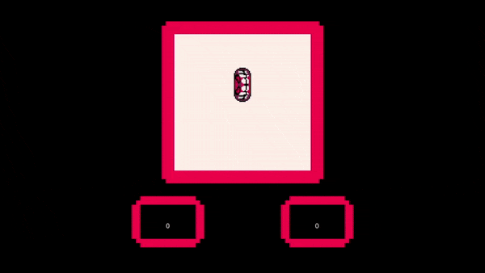

Twisted Arcade
Some gameplay.
Made for a school project in high school.
Twisted Arcade is one my first official dives into game development. It was imagined as a Warioware like game where the player is faced with a series of microgames one after another.
It had three microgames when it was submitted and although this was made a long time ago, I'm still thinking of revisiting the concept and remaking it.
Status: Unreleased
< Back to works